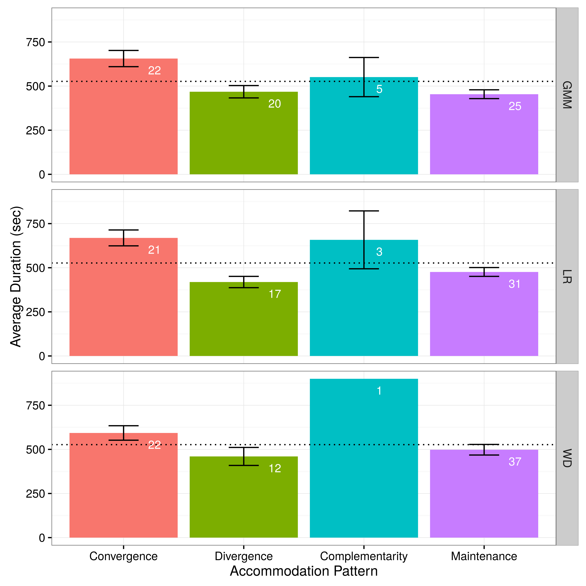
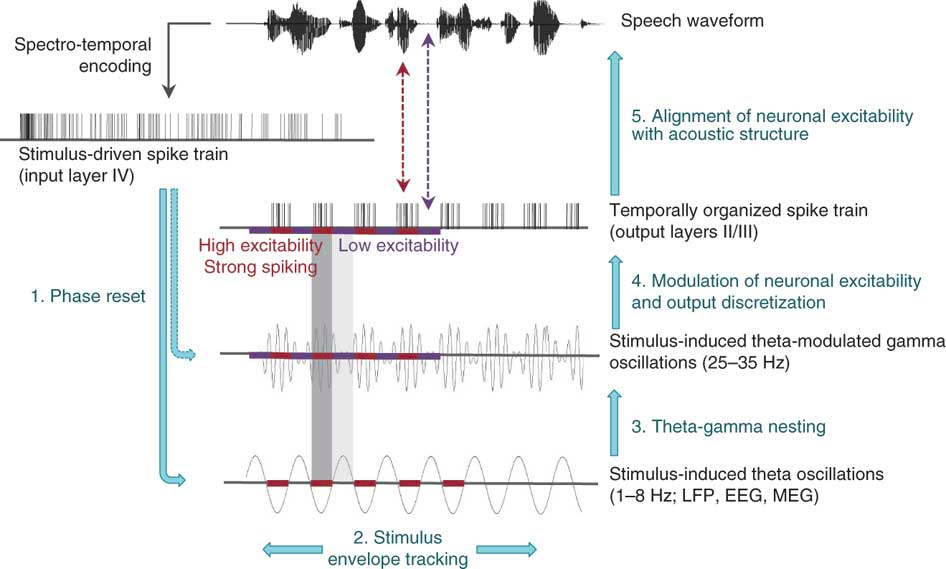
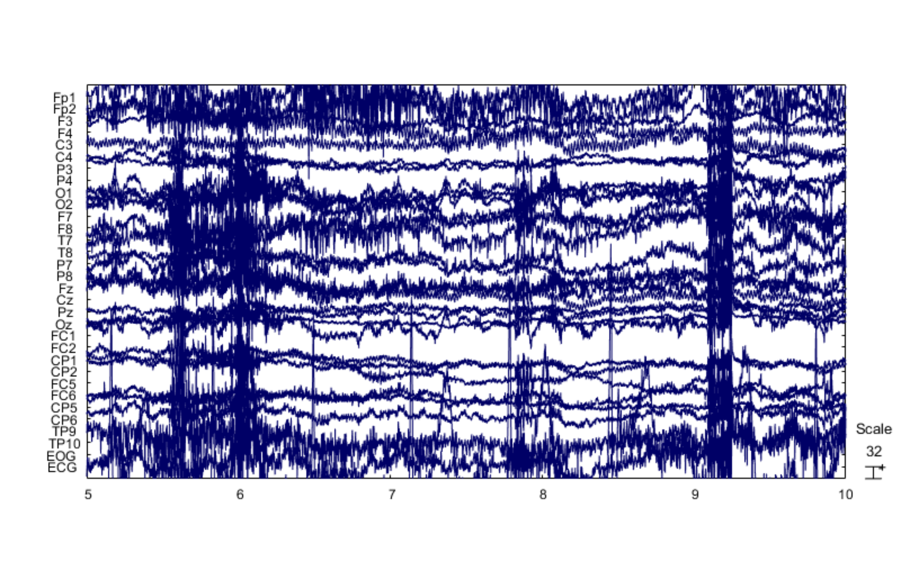
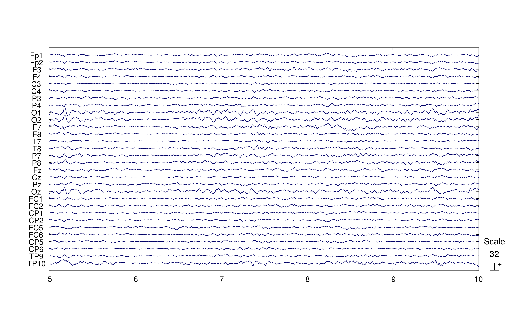
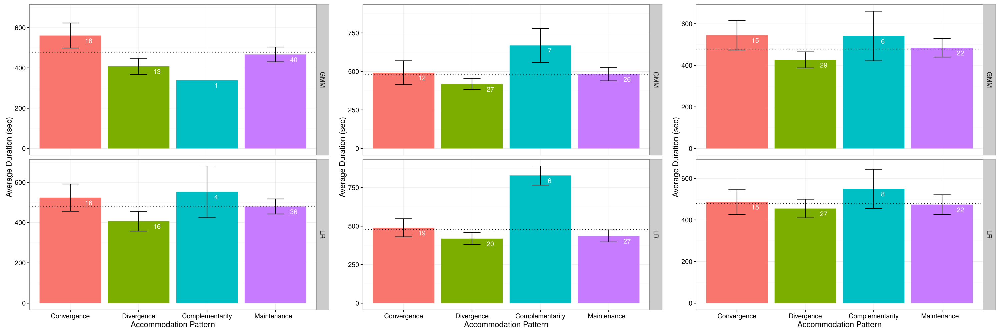

Brains in Dialogue
Investigating accommodation in live conversational speech
for both speech and EEG data
Vijay Solanki, MA(Hons)
Main Research Question:
Is speech accommodation linked to the alignment of mental representations as accounted for through observable brain activity?
What, Why and How
What is accommodation?
Why should accommodation be linked to joint brain activity?
How can accommodation & brain activity be measured in tandem?
Speech Accommodation
What is accommodation?
The tendency of a speaker to adjust their production of speech sounds in relation to the person (or persons) that they are speaking to
- Communication Accommodation Theory
Perception of the intentions and behaviours of an interlocutor influence the levels and types of accommodation
| Convergence | |||
| Divergence | |||
| Complimentarity | |||
| Maintenance |
However, findings are complex and do not seem to follow a simple pattern
There are many approaches to measuring accommodation and they all offer insight into how accommodation operates and what its underlying mechanisms are
However, most rely on carry over effects and cannot evaluate accommodation 'in situ'
Behavioural Experiment:
Phonetic Analyses
Task
- The DiapixUK task was used to elicit speech
- Requires participants to work together to find 12 differences between 12 different images pairs
- Participants could not see each others images

- Presentation Position
- Overall change in speech patterning
- Interaction Length
- Change in speech patterning related to task difficulty
Key question
- Can a phonetic analysis approach be used to detect accommodation across a continuous interaction?
Results
The results for the phonetic analysis were mostly non-significant
Of the significant results that were present, they suggested the following:
- Some suggestion that accommodation may occur differently across different phonetic measures
- Context plays a role in accommodative effects
- Weak support for the detection of accommodation in a continuous interaction using acoustic-phonetic measures
Accommodation and HMMs
Hidden Markov Models (HMMS)
and speech data
Markov chains
Hidden Markov Models
In this way, HMMs are able to characterise the general form of a continuous signal
Basic methodological approach:
- Conversion to MFCCs
- Training of HMMs for each speaker
- Computation of likelihood ratios
- Correlation with time
3 types of speaker recognition models:
- Gaussian Mixture Model (GMM)
- General distribution of acoustic evidence in the feature space
- Left-Right Model (LR)
- Temporal patterning of observed acoustic evidence
- Word Dependent Model (WD)
- Change in acoustic evidence over time
Behavioural Experiment:
HMM Analyses
Key questions:
- Can an HMM based approach detect accommodation patterns in a continuous interaction?
- Are results from the HMM based approach compatible with the trends suggested by the phonetic analyses?
Can an HMM based approach detect accommodation patterns in a continuous interaction?
| Model Type | No. Significant Cases | p |
|---|---|---|
| GMM | 57 | <10-7 |
| Left-Right | 50 | <10-7 |
| Word Dependent | 42 | <10-7 |
Yes
Do the results of the HMM based approach mirror those of the phonetic analyses?
 |
 |
Yes
What do these findings suggest?
- Support for the detection of accommodation in a continuous interaction using an HMM based approach
- Indication that accommodation can be detected at different levels of acoustic evidence
- Further support for the role of context in accommodative effects
Accommodation and
Brain Activity
Why should accommodation be linked to joint brain activity?
The cognitive mechanisms underlying accommodation
- The motor theory of speech
- Direct realism
- Phonetic detail in episodic memory
- Mechanistic language use in dialogue
All assume a non-trivial link between production and perception
| Neural entrainment | Neural entrainment to speech |
|---|---|
 |
 |
Neural entrainment to the speech of another speaker could produce a degree of inter-speaker entrainment
This would be especially true in situations that require high levels of coordination
How can accommodation & brain activity be measured in tandem?
- Recall that an HMM is able to characterise the general form of a continuous signal
- When using EEG to measure brain activity, the output is a continuous signal related to the electrical activity of the brain
- Application of the HMM based approach required only that a suitable vectorisation parameter be chosen, here the Power Spectral Density (PSD)
The Neural Experiment
Method
The same as for the behavioural experiment, except for the application of EEG caps and collection of EEG data
Key questions
- Can the findings of the HMM based approach to accommodation detection presented in the behavioural experiment be replicated?
- Is an HMM based approach able to detect shifting trends in brain activity patterns relative to an interlocutor?
- Is there a relationship between speech accommodation patterns and brain activity patterns between speakers?
Speech Analyses
Can the findings of the HMM based approach to accommodation detection presented in the behavioural experiment be replicated?
| Behavioural Exp. (speech) | Neural Exp. (speech) |
|---|---|
 |
Yes
EEG Analyses
| Neural Exp. (speech) | Neural Exp. (EEG) |
|---|---|
|
|
 |
- Is an HMM based approach able to detect shifting trends in brain activity patterns relative to an interlocutor?
- Is there a relationship between speech accommodation patterns and brain activity patterns between speakers?
Maybe
Maybe
The Conclusions
Behavioural
- Accommodation occurs across a number of acoustic features
- Considering accommodation on a continuous basis may allow for a new avenue of investigation
- An HMM based approach presents a potential tool for exploring that avenue
- Looking at accommodation in relation to behavioural triggers may provide novel insights
Neural
- Further evidence for the efficacy of holistic approaches for the detection of speech accommodation is provided
- HMM based approaches may be able to detect shifts in brain activity in relation to accommodation
- However, improvements to the approach are needed to verify this
Main research question:
Is speech accommodation linked to the alignment of mental representations as accounted for through observable brain activity?
- The data presented here tentatively suggest that it might be, but:
- More research is needed
- The potential tools designed here need calibration and to be applied more widely
Thank you
Additional Content
Participants - Behavioural
- 6 female participant pairs (12 participants total)
- Aged 19 to 65 (mean 30.92)
- All born and raised in the city of Glasgow conurbation
- All have normal hearing and normal or corrected to normal vision
Three acoustic-phonetic features were chosen for analysis:
- VOT
- Vowel F1 & F2 values
- Speech rate
Markov chains
Participants - neural
- 6 female participant pairs (12 participants total)
- Aged 20 to 65 (mean 36.33)
- All born and raised in the city of Glasgow conurbation
- All have normal hearing and normal or corrected to normal vision
Pre-processing
- Downsample to 512Hz
- Clean data with Artefact Subspace Reconstruction
- Apply PREP pipeline
- Reduce data contamination with ICA
|  |  |
EEG Analyses: Not Speaking

EEG Analyses: Both

EEG Analyses: All
| Speaking | Not Speaking | Both | ||
|---|---|---|---|---|
|  | |
|
||